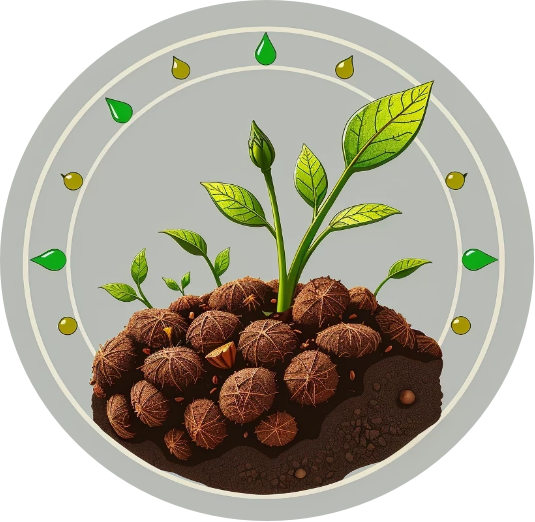

Мы предлагаем системный подход к борьбе с нефтяными загрязнениями почвы, объединяя экологическую безопасность и экономическую целесообразность
Карта партнераНаш продукт — это результат современных разработок в области биотехнологий, представляющий собой гранулированный сорбент с активными микроорганизмами-нефтедеструкторами. Это решение создано для компаний, которые стремятся к эффективному устранению последствий техногенного воздействия, используя доступные и надежные инструменты
Операционная независимость Применение сорбента позволяет нефтедобывающим предприятиям оперативно ликвидировать локальные загрязнения собственными силами. Это исключает необходимость обязательного привлечения дорогостоящих внешних экологических служб
Использование агропромышленных отходов в качестве основы делает продукт доступным и позволяет эффективно утилизировать вторичное сырье
Каждая растительная гранула — это «автономная станция» очистки. Она содержит запас питательных веществ, необходимых для активного роста микроорганизмов
Волокна гранулы сорбируют (впитывают) нефтепродукты, после чего микроорганизмы внутри гранулы начинают их процесс разложения
В процессе работы компоненты сорбента улучшают структуру и аэрацию почвы, постепенно превращаясь в полезное органическое удобрение
В отличие от жидких биопрепаратов, которые часто остаются на поверхности, наш сорбент работает во всем почвенном горизонте, обеспечивая полную деструкцию углеводородов
Микроорганизмы внутри гранул обеспечены необходимым запасом питательных веществ и защищены растительной основой, что гарантирует их выживаемость и активность даже в сложных условиях
Практические испытания подтвердили, что деструкция нефти в почве при использовании наших гранул происходит на 10–15% быстрее, чем при использовании жидких форм биопрепаратов
Использование вторичного сырья промышленности в сочетании с высокой эффективностью очистки делает наш продукт ключевым элементом в стратегии снижения антропогенного воздействия на окружающую среду